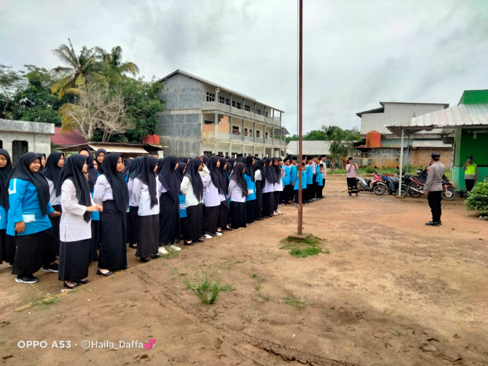
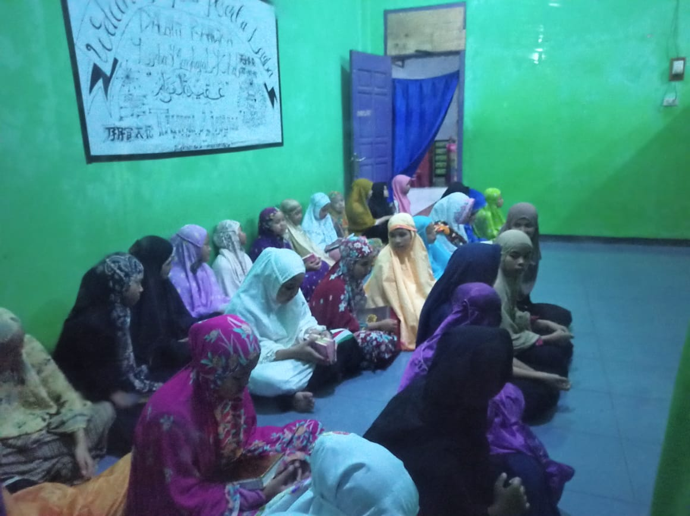
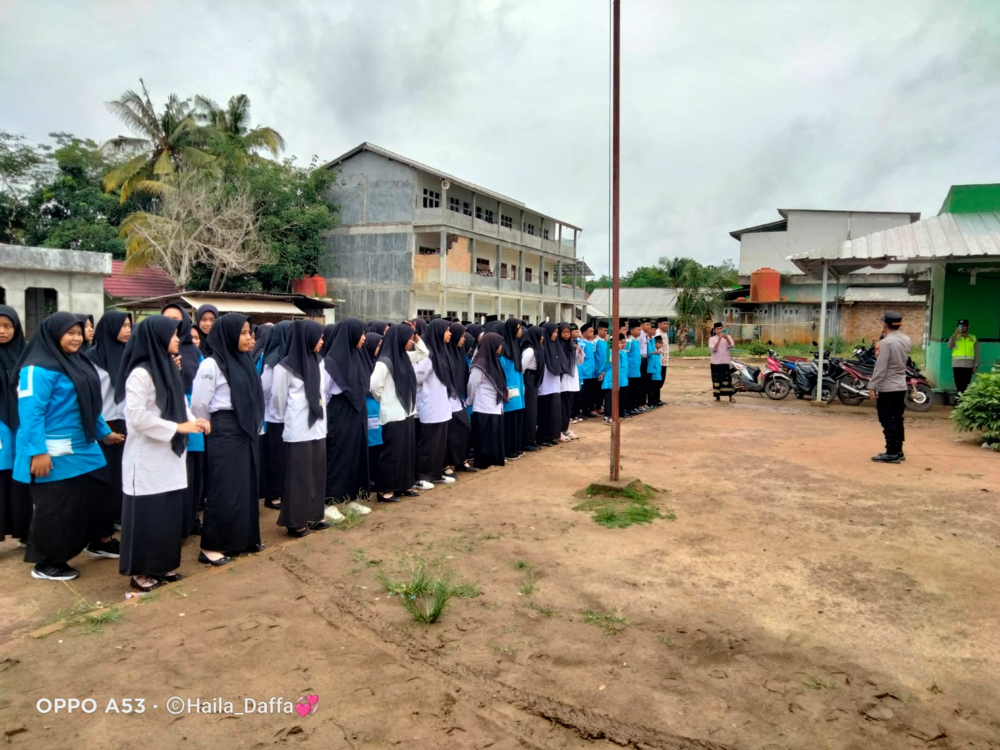
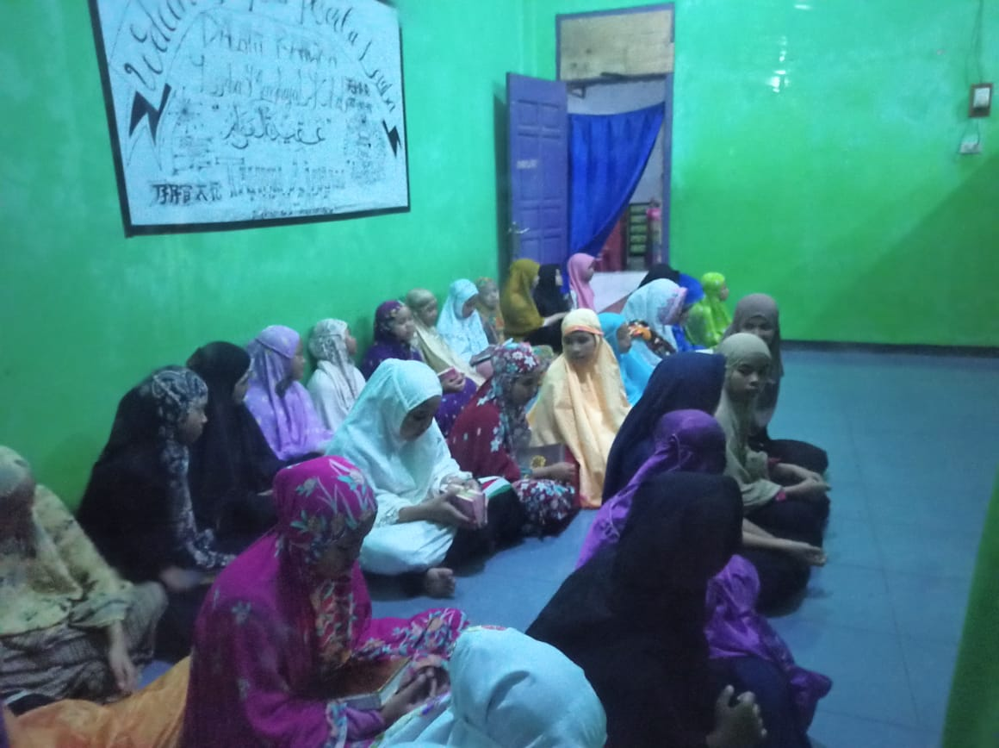

Komitmen Kami
Di Yayasan Darul Qur'an, kami berkomitmen untuk menyediakan pendidikan yang berkualitas dengan pendekatan yang mendalam terhadap ajaran Al-Qur'an. Kami percaya bahwa pendidikan bukan hanya tentang pengetahuan, tetapi juga tentang karakter dan akhlak.
Dengan pengalaman lebih dari dua dekade, kami terus berinovasi dalam metode pengajaran dan pengembangan diri santri kami.
Program Unggulan
Kami menawarkan berbagai program pendidikan yang dirancang untuk membentuk generasi unggul:
- TK Al-Qur'an: Pembelajaran awal dengan nilai-nilai agama.
- MI Terpadu: Pengajaran dasar Al-Qur'an dan sains.
- MTs Kreatif: Kurikulum interaktif untuk perkembangan intelektual.
- MA Inspiratif: Persiapan ke perguruan tinggi dengan fokus ilmu agama dan umum.
Kegiatan Pesantren
Kegiatan kami mencakup berbagai aspek pembelajaran dan pengembangan sosial:
- Pendidikan karakter melalui kegiatan keagamaan.
- Program sosial: Bakti sosial, kunjungan, dan lingkungan.
- Ekstrakurikuler: Seni, olahraga, dan pengembangan keterampilan.
Jadilah Bagian dari Kami!
Bergabunglah dengan Yayasan Darul Qur'an dan raih masa depan yang gemilang. Daftar sekarang untuk program pendidikan kami!
Daftar Online